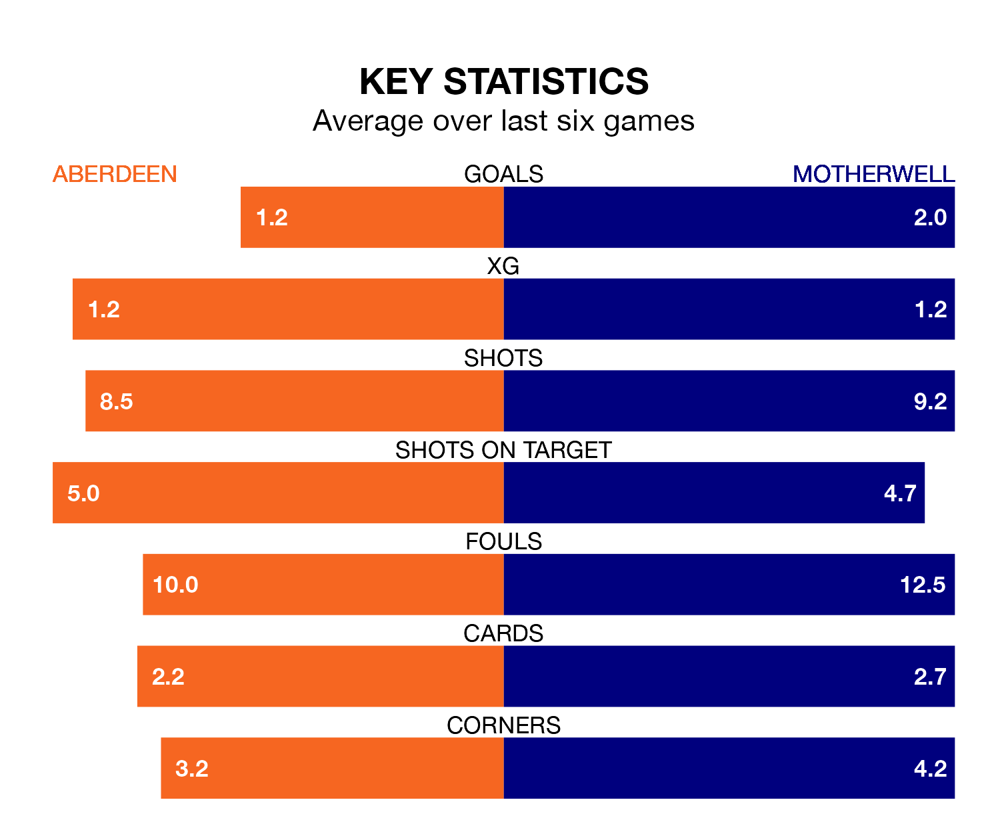

Motherwell face Aberdeen on Wednesday seeking to protect their long unbeaten run in the Premiership.
Motherwell are unbeaten in five, with two wins and three draws, ahead of the 7.45pm kick-off.
They face an Aberdeen team who have drawn three and lost two over the same number of games.
With 26 goals in 23 games so far this season, Aberdeen are scoring at below the league average rate with 1.1 goals per game. And they are conceding more than average, letting in 36 goals at a rate of 1.6 per game.
Motherwell, meanwhile, are average scorers, with 1.3 goals per game. They have conceded 1.5 goals per game.
In Bojan Miovski, the home side have one of the league's most on-form strikers so far this season. He has notched 13 goals in 23 appearances, to sit second in the scoring charts.
His goal rate of one every 152 minutes is quicker than that of Thelonius Bair, the visitors' top scorer with a goal every 174 minutes, and a total of eight goals in 24 games.
In the last 10 years, Aberdeen and Motherwell have played each other on 31 occasions. Aberdeen won 17 of them, Motherwell 11, and they drew three times.
On average, Aberdeen scored 1.6 goals and Motherwell 1.2 in those matches.
Their last meeting was on November 1, when Aberdeen won 4-2 away.
Aberdeen are ninth in the table after 23 games, of which they have won six and drawn seven, earning 25 points.
Motherwell are one place ahead of Aberdeen in eighth, with five wins and 10 draws putting them on the same number of points.
Aberdeen's last match was on February 6, a 2-1 loss against Rangers, with Miovski getting the goal for Aberdeen.
Motherwell beat Ross County 5-0 last time out, also on February 6, with Blair Spittal (two), Andrew Halliday, Bair and Jack Vale on the scoresheet.
Wednesday's match will be refereed by William Collum, who has taken charge of 12 Premiership games so far this season, issuing one red card and booking 37 players. He has awarded four penalties.
The last Aberdeen game Collum refereed was a 2-0 away loss to Hibernian on December 3. His last Motherwell match was their 2-1 loss at home against Celtic on September 30.
Updated: 11:18 (UTC), 08/02/24